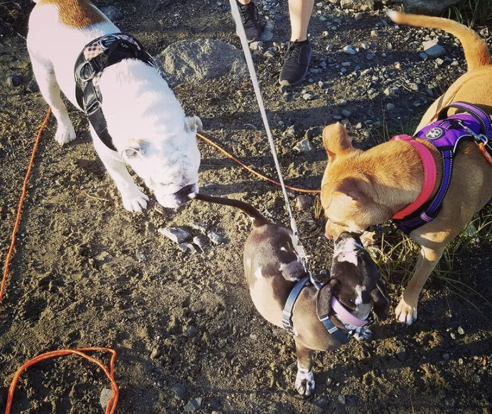

Our Adoption Story
|  |  |
Hello, my name's Mahalo!
When I was 2-months-old, I was found by someone in an open field. I was covered in fleas, dirt, and my stomach was so big I didn't know why! That's when I was taken to the vet and the veterinarian told the person who found me that my belly was full of worms. No wonder my belly was like that! Suddenly, I was then taken to a woman who saves and fosters stray dogs just like me, and that’s when I was given a second chance at life. The woman became my foster mama and she made sure to take care of me very well, giving me lots of delicious food to eat, plenty of play time, and she made sure my belly had no more worms! After I recovered and became healthy again, my foster mama said I had to go and be with a new family! My foster mama took me to the NorthEast Animal Shelter in Salem.
Eventually, I saw these two people standing in front of me. One was a tall guy and his head was so shiny that it looked like a ball! The other person was shorter and had long black hair. She talked so sweetly to me that I wanted to play with her! Then I was placed in a separate area just to play with these two people, and I became super excited! They were so fun to play with and very kind and friendly to me. I found out their names were John and Liza. Both John and Liza kept talking about my cute ears, my little eye-brows that I wiggle, and how attentive I was to them (I don't even know what that word means, but I'll take it as a compliment!). After being with them for awhile, they both had to go but Liza told me "We'll come back for you. I promise". And I will forever remember that promise she made to me.
Then both Liza and John came back for me and now they are my forever parents! They give me lots of toys to play with, and both my parents shower me with so much love, care, yummy treats, and cuddles! Both my mommy and papa let me see other friends and family, and I get to spend so much time with them that it makes me super happy! I was soon able to meet my big sister Alexie and I love playing with her. One day, I heard both mom and dad talk to my foster mama and decided to keep in touch and built a rapport with her. It makes me happy because she is stil a part of my life, and eventually all of us will soon meet again.
| My Parents with little Mahalo | Mahalo's First Christmas | Mahalo with me |
Little Mahalo |